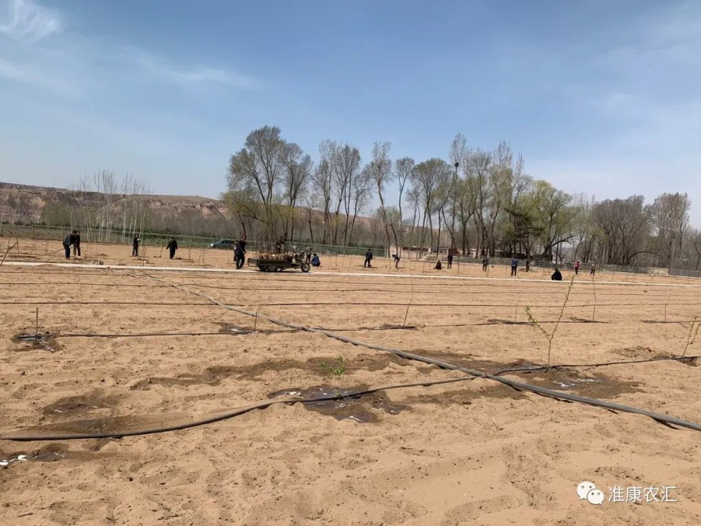

张家圪堵村位于沙圪堵镇西南部，东邻布尔洞沟村，南接纳日松镇，西北与乌素沟村接壤。我村属丘陵沟壑山区，常年干旱少雨，农牧业经济发展条件脆弱，投入回报率低，境内煤炭资源较丰富，现有卓正煤矿、新鑫煤矿，属禁止发展区。
全村总面积48平方公里，所辖人口581户共1351人，下辖8个农业生产合作社（徐家梁、高家圪楞、高家圪台、羊千板梁、阳畔、小虎石沟、李家渠、张家圪堵），有耕地5500亩，人均收入9800元。常住户126户277人。有少数民族42户83人。党员26人，其中女党员5人，60周岁党员15人。